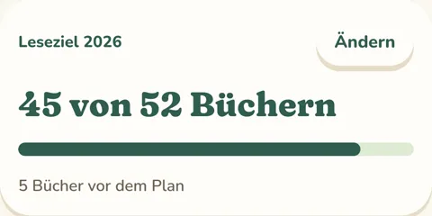
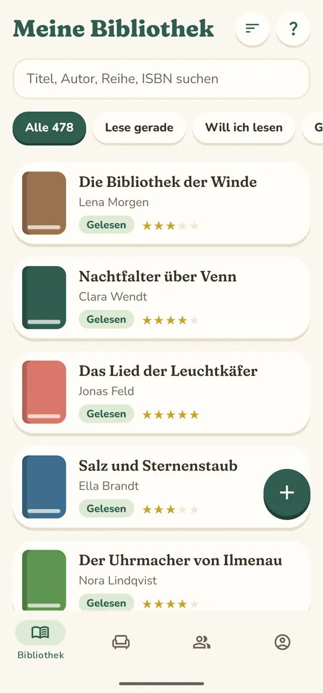
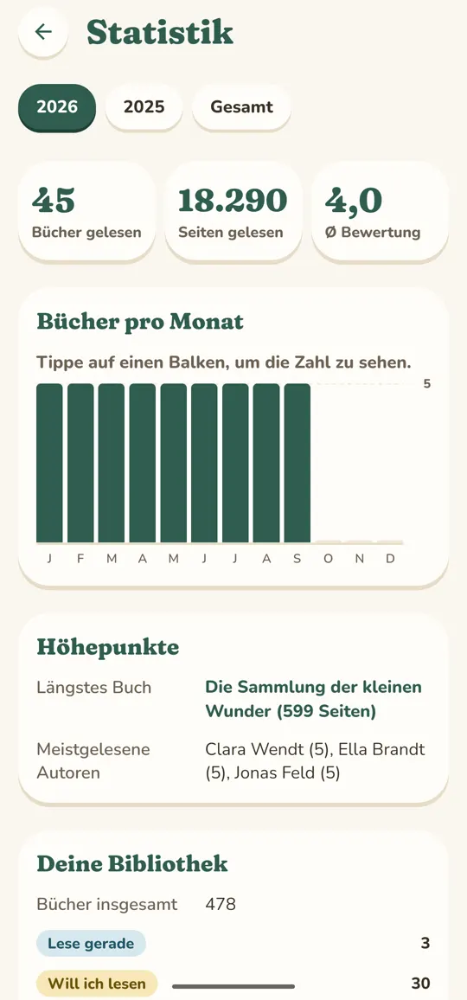
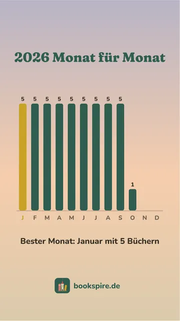
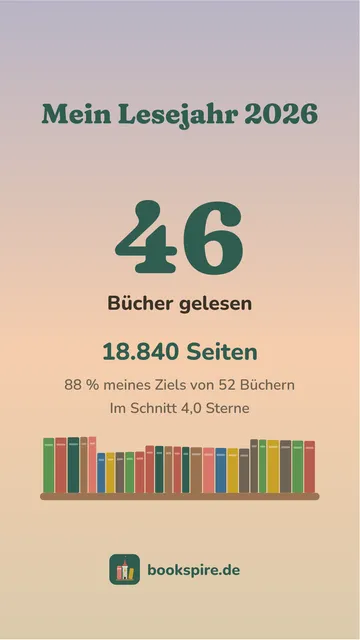
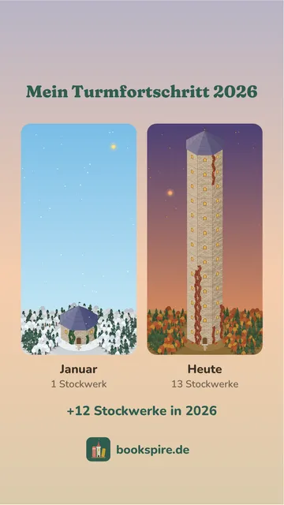

Status und Sterne
Gelesen, lese gerade, will ich lesen oder abgebrochen. Bewerte mit Sternen, schreib Notizen, markiere Favoriten.
Für alle mit zu vielen Büchern. Also für dich.
Bookspire hält fest, was du liest, und baut daraus ein Lesezimmer. Jedes beendete Buch zieht ins Regal, und sind die Regale voll, bekommt dein Turm ein neues Stockwerk. Gelesen wird wie immer: auf Papier, dem E-Reader oder als Hörbuch.
Im Bett, in der Bahn, auf Papier, dem E-Reader oder als Hörbuch. Deine Bücher holst du per ISBN-Scan, Suche oder Import aus Goodreads und Co.
Ein paar Klicks, und Bookspire weiß, auf welcher Seite du gerade steckst. Ist die letzte Seite gelesen, bekommt das Buch seine Sterne und eine Notiz, was es mit dir gemacht hat.
Jedes beendete Buch zieht ins Regal. Jedes, das du ab jetzt beendest, schaltet etwas Neues für dein Lesezimmer frei.
Jedes beendete Buch steht im Regal, den Buchrücken nach vorn, Seite an Seite mit all denen, die dich nachts wach gehalten haben. Was noch wartet, stapelt sich im Erdgeschoss. Ja, auch dein TBR bekommt seinen Platz. Ein Klick aufs Regal holt alle Titel ganz nah heran.
Sind alle Regale eines Stockwerks gefüllt, legt sich eine Zauberwolke um die Turmspitze, und dein Turm bekommt eine neue Etage. Von außen siehst du, wie weit du schon gekommen bist. Buch für Buch, Stockwerk für Stockwerk.
Ein Ohrensessel für lange Kapitel. Kerzen für die Nächte, in denen nur noch eine Seite gelesen wird. Und dann noch eine. Wände aus Moosstein oder Sternenstein, ein Kamin statt des Fensters: Jedes Buch, das du ab jetzt beendest, schaltet etwas frei. Wo es steht und in welcher Farbe, entscheidest du.

Der Blick aus dem Fenster folgt Tag und Nacht, Frühling, Sommer, Herbst und Winter. Zu Halloween, im Advent, zu Ostern und zu Mittsommer warten besondere Saisons.

Erstelle deinen Avatar. Er schlendert durch dein Lesezimmer, kuschelt sich in den Sessel und vergisst über einem Buch die Zeit. Mit jeder Seite, die du erfasst, kommen neue Kleidung, Frisuren und Farben dazu.
Hinter dem Turm steckt deine ganze Bibliothek: Lesestatus, Bewertungen, Notizen, eine Statistik über dein Lesejahr und ein Leseziel, das mitzählt. Wie bei Goodreads und Co. – nur dass hier aus Zahlen ein Zuhause wird.



Gelesen, lese gerade, will ich lesen oder abgebrochen. Bewerte mit Sternen, schreib Notizen, markiere Favoriten.
Jedes Buch in Sekunden gefunden, nach Autor*in sortiert, Reihen in der richtigen Reihenfolge. Mit eigenen Tags wie „Herbstlektüre“ oder „Comfort Read“ ordnest du alles so, wie es für dich Sinn ergibt.
Trag ein, wer dein Buch gerade hat. Das bleibt immer privat, auch vor Freund*innen.
Bring deine Bibliothek aus jeder App mit CSV-Export mit und nimm sie genauso einfach wieder mit: als CSV-Datei oder Sicherung.
Wie viele Bücher, wie viele Seiten, welcher Monat dein stärkster war und wie hoch dein Turm gewachsen ist: Bookspire fasst dein Lesejahr in Karten zusammen. Wisch durch, speichere sie in deinen Fotos oder teile sie direkt als Story.
Auch dein Lesezimmer und deinen Turm kannst du jederzeit als Bild teilen, im Story-Format und mit deinen Zahlen.



Schau dir die Lesezimmer deiner Freund*innen an – und was gerade auf ihrem Stapel liegt.
Schick ein Buch mit einer Notiz. Mit einem Klick landet es auf der Leseliste.
Wer schafft diesen Monat die meisten Seiten? Ein kleiner Ansporn unter Freund*innen – mitmachen musst du nicht.
Was Freund*innen sehen, legst du selbst fest. Ohne Konto bleibt alles auf deinem Handy.
Gleich zu Beginn liegt ein Ei in deinem Lesezimmer. Mit jeder Seite, die du erfasst, wird es ein bisschen wärmer. Irgendwann zeigt sich der erste Riss.
Was daraus schlüpft? Das verraten wir nicht. Lies es selbst heraus.
Warum ich Bookspire baue
Ich bin Michael. Ich lese am liebsten High Fantasy, spiele Dungeons & Dragons und höre gern Metal. Bei D&D wächst eine Figur mit jedem Abend und trägt ihre Geschichte sichtbar mit sich herum. Von meinen Büchern blieben nur eine Liste mit Häkchen und eine Statistik, die sich nach nichts anfühlte.
Ich wünsche mir, dass du in ein paar Jahren in deinen Turm schaust und dich erinnerst: an das Buch, das dich nachts wach gehalten hat, an die Empfehlung, aus der ein Lieblingsbuch wurde. Kein Fortschrittsbalken, sondern ein Ort voller Geschichten, die du selbst erlebt hast.
Ich baue Bookspire allein, in meiner freien Zeit. Wenn dir ein Fehler auffällt oder du eine Idee für Bookspire hast, erreichst du mich unter kontakt@bookspire.de.
Nein. Du liest wie gewohnt, auf Papier, dem E-Reader oder als Hörbuch, und erfasst in Bookspire nur, wie weit du bist.
Gerade dann. Jede Seite zählt, und schon das erste Buch bringt etwas Neues in dein Lesezimmer. Ein Leseziel kannst du dir setzen, musst du aber nicht.
Dort sammelst du Listen und Diagramme. Bei Bookspire wird aus jedem Buch etwas, das du siehst: ein Regal, das sich füllt, ein Zimmer, das du einrichtest, ein Turm, der wächst. Deine Bibliothek aus Goodreads nimmst du einfach mit.
Ja. Bookspire importiert deine Bücher aus Goodreads, BookBuddy oder jeder CSV-Datei. Bücher, die schon da sind, werden übersprungen. Und genauso einfach kommen sie wieder heraus: als CSV-Datei oder als Sicherung.
Nein. Ohne Konto bleibt alles auf deinem Gerät. Mit Konto werden Bibliothek und Turm gesichert und synchronisiert, und du kannst Freund*innen finden. Mehrere Geräte zugleich synchronisierst du mit der Gilde.
Nichts, und das bleibt so: Bibliothek, Erfassen, Statistik, Freund*innen und dein wachsender Turm sind kostenlos. Für alle, die mehr wollen, öffnet zum Start die Bookspire Gilde, ein Abo mit allen Etagen zum Einrichten, dem Gildenladen und der Gildenstatistik.
Bookspire kommt bald in den App Store und zu Google Play. Trag dich in die Warteliste ein, dann schreiben wir dir, sobald es so weit ist. Als Dankeschön bekommst du zum Start das Set „Erste Seite“.
Wir schreiben dir einmal, sobald Bookspire im Store ist. Kein Spam, versprochen.
Als Dankeschön das Set „Erste Seite“: ein Teppich mit aufgeschlagenem Buch, ein Lesemantel mit goldener Borte und ein goldener Federkiel für deinen Avatar. Es gibt sie nur für alle, die auf der Warteliste stehen – und sie bleiben für immer deine.
Nach dem Eintragen bekommst du eine E-Mail mit einem Bestätigungslink. Abmelden geht jederzeit. Mehr dazu in der Datenschutzerklärung.